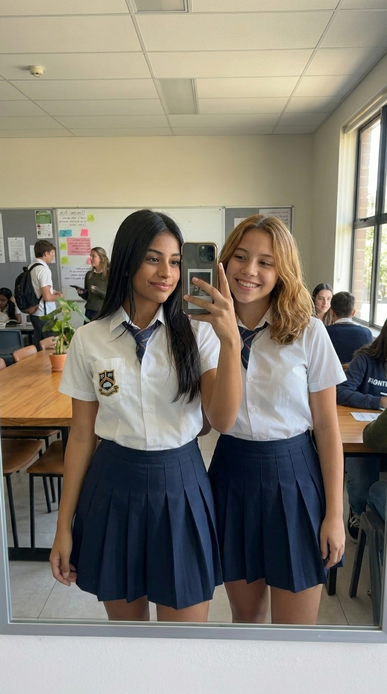
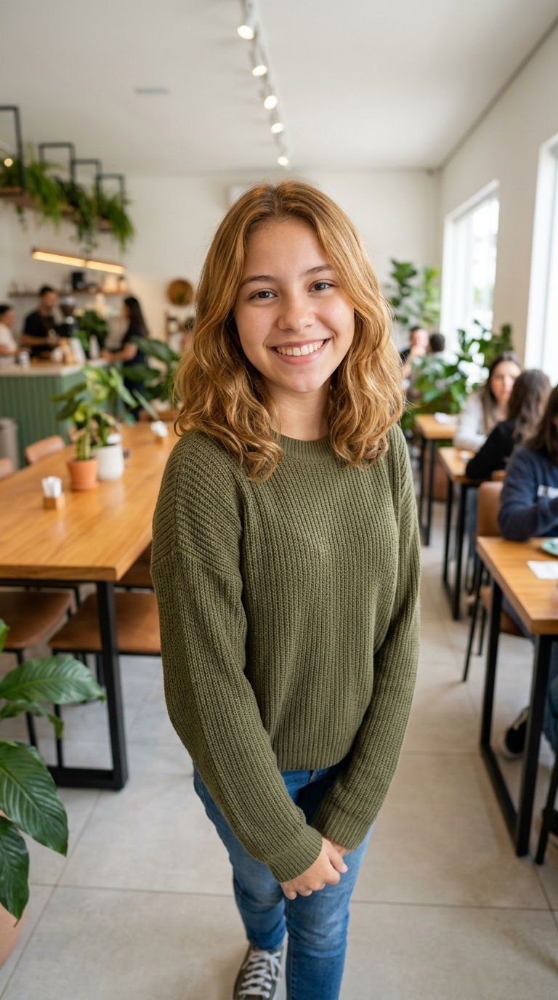
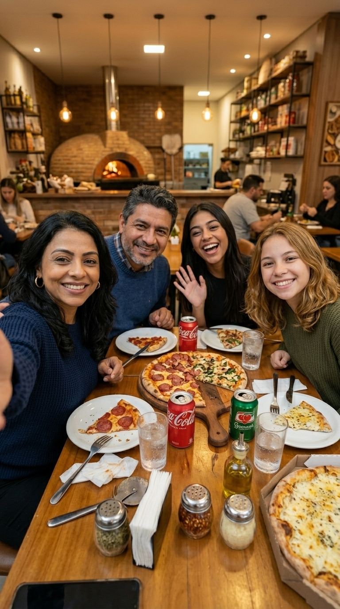
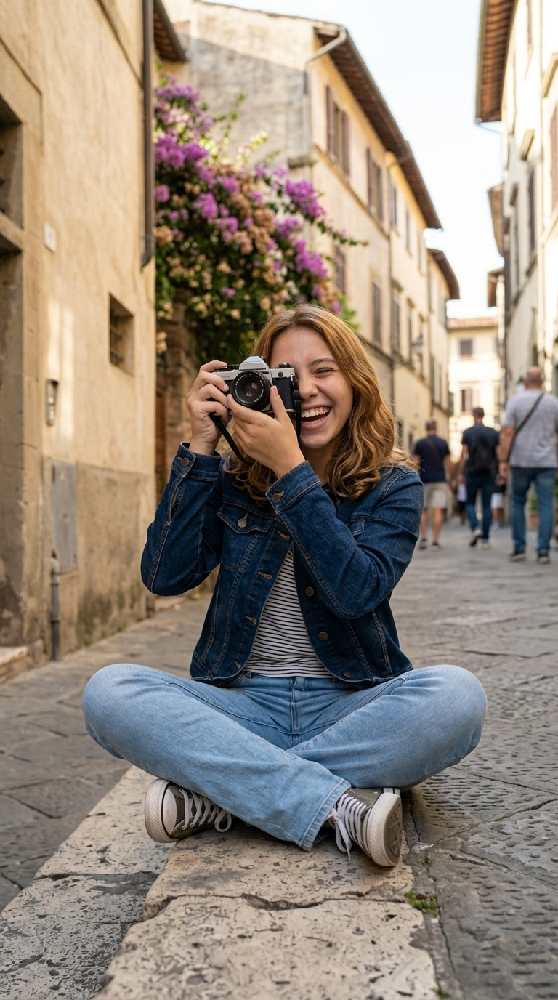
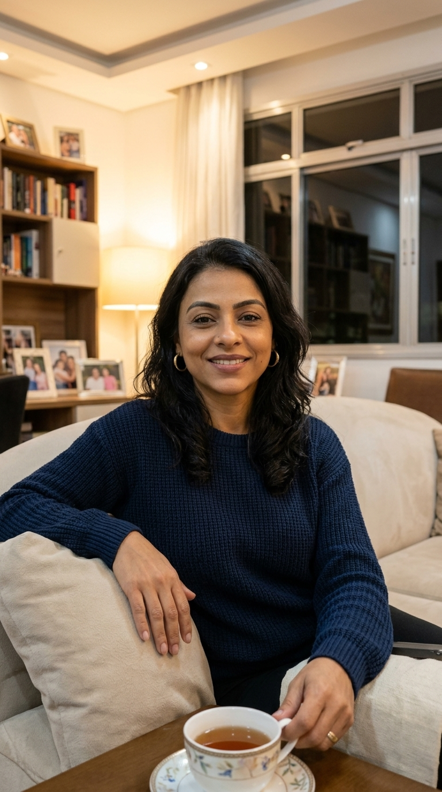

Bem-vinda ao meu espaço
Aqui eu compartilho meu dia a dia, minhas histórias, descobertas e tudo aquilo que torna a vida mais bonita — entre páginas, viagens, receitas e pequenos momentos que merecem ser guardados.

“Escrevo para guardar o tempo.”
Sobre mim
Sou apaixonada por histórias — as que leio, as que vivo e as que escrevo aqui para você. Aqui dentro você vai encontrar um pouco de tudo: reflexões sobre a vida, dicas de livros, lugares que visitei, receitas afetivas e os produtos que realmente fazem parte do meu dia a dia.
Quando não estou escrevendo, provavelmente estou organizando minha estante, experimentando uma receita nova, planejando a próxima viagem ou simplesmente aproveitando uma tarde com uma boa xícara de chá. Acredito que a vida é feita de pequenos detalhes — e é sobre isso que esse espaço fala.
Acredito em planos grandes feitos com passos pequenos e consistentes.
Sempre em busca de novas histórias, lugares e aprendizados.
Esse espaço é, antes de tudo, feito para te fazer sentir em casa.
Linha do tempo
Alguns capítulos que marcaram minha caminhada até aqui.
Escrevi meu primeiro texto em um caderninho que carrego comigo até hoje. Foi ali que percebi o quanto amava contar histórias.
Aprendi sobre independência, autoconhecimento e a importância de me permitir viver novas experiências.
Decidi compartilhar minhas histórias com mais pessoas e criei este diário, que hoje é um dos meus lugares favoritos.
Hoje, sigo escrevendo, descobrindo e compartilhando — com a mesma alegria do primeiro dia, agora com você.
Diário
Um espaço para registrar vivências, aprendizados e reflexões do dia a dia.
Momentos
Pequenos recortes de instantes que valem a pena guardar.




Curadoria pessoal
Aquilo que mais amo e recomendo de coração.
Seleção especial
Itens que realmente uso e amo no meu dia a dia. Alguns links abaixo são de afiliados.
✦ Este espaço pode conter links de afiliados. Ao comprar por eles, você apoia este blog sem custo adicional para você.